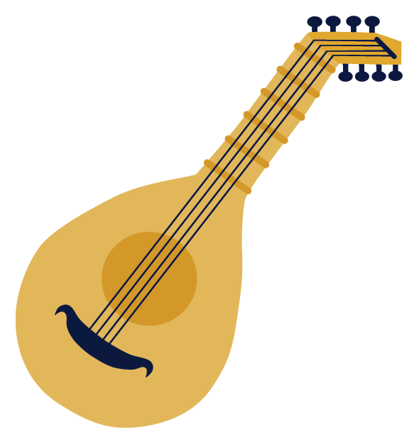
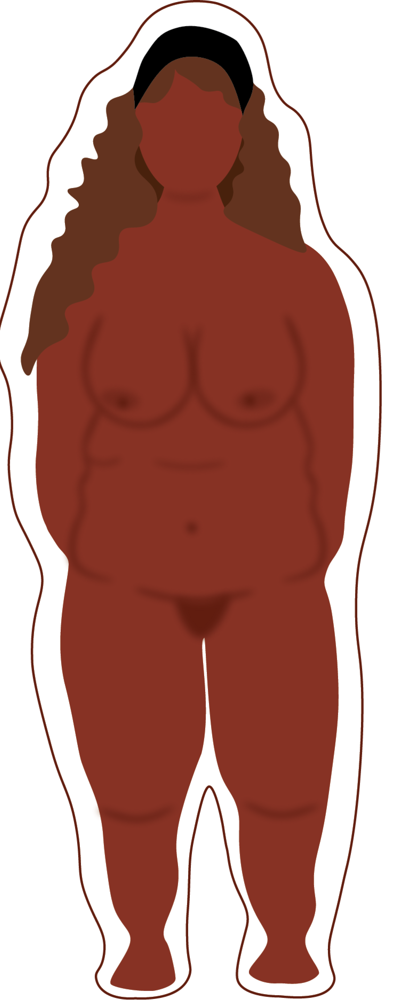

RENÆSSANCEN
DE DOVNE ADELIGE
Du er tilbage i renæssancen (år 1536-1660). På gaderne ser du prostituerede, tyve og tiggere, og befolkningen består af 80% bøndere.
Landets øverste top består af de adelige købmænd, som har råd til at betale sig fra arbejdet. De kan derfor bruge deres tid på at holde store middage og klæde sig i fine silkekjoler fra ‘fjerne’ lande

FEDME = RIGDOM
En fyldig og overvægtig krop var et tegn på rigdom, da det viste at man havde råd til at lave ingenting og spise store mængder mad. Derudover var det drømmen at kunne gå i kjoler i silke fra Kina og andre ‘eksotiske’ lande.
